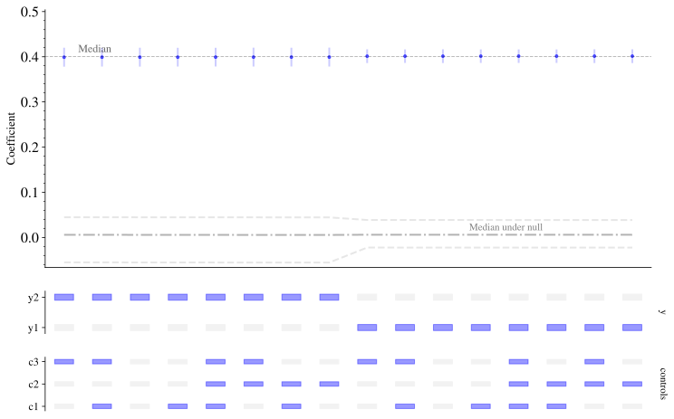
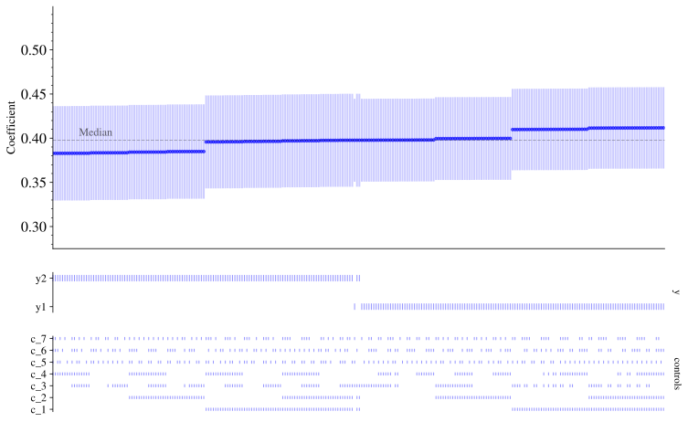

Let’s see some of Specification Curve’s features in action.
Basic Use
Here’s an example of using Specification Curve. Note that, in the below, we can pass strings or lists of string into the arguments of the class SpecificationCurve. The programme then automatically performs all of possible regressions of endogeneous variables on exogeneous variables and controls. The estimate that is picked out is the coefficient on the given combination of endogeneous and exogenous variables (with conditioning on the given controls).
If a control variable is categorical, rather than continuous, it will be treated as a fixed effect.
Grey squares (black lines when there are many specifications) show whether a variable is included in a specification or not. Blue or red markers and error bars show whether the coefficient is positive and significant (at the 0.05 level) or red and significant, respectively.
You can also specify models with the formula API. An example string would be “y1 | y2 ~ x1 | x2 | x3 + c1 + c2 + c3 | c4”. This would produce a specification curve in which there two endogenous variables, two exogenous variables, two variables that are always included (c1 and c2), and two controls that are included in all possible combinations.
Here’s an example, for which we first generate some data.
import numpy as npimport pandas as pdimport statsmodels.api as sm# Set seed for random numbersseed_for_prng =78557# prng=probabilistic random number generatorprng = np.random.default_rng(seed_for_prng)# generate some fake datan_samples =1000x_2 = prng.integers(2, size=n_samples)x_1 = prng.random(size=n_samples)x_3 = prng.integers(3, size=n_samples)x_4 = prng.random(size=n_samples)x_5 = x_1 +0.05* np.random.randn(n_samples)x_beta =-1-3.5* x_1 +0.2* x_2 +0.3* x_3 # NB: coefficient is -3.5prob =1/ (1+ np.exp(-x_beta))y = prng.binomial(n=1, p=prob, size=n_samples)y2 = prng.binomial(n=1, p=prob *0.98, size=n_samples)df_logit = pd.DataFrame( [x_1, x_2, x_3, x_4, x_5, y, y2], ["x_1", "x_2", "x_3", "x_4", "x_5", "y", "y2"]).T
Although not everyone is convinced, it may be informative to run some statistical inferences on the specification curve. These ask: considering the full set of reasonable specifications jointly, how inconsistent are the results with the null hypothesis of no effect? You can find more details in [@simonsohn2020specification].
dfn = sc.load_example_data3()dfn.head()
y1
y2
x1
c1
c2
c3
ccat
0
0.408694
-0.677861
0.319844
0.873945
0.315051
0.317730
0
1
0.823288
0.220807
0.879205
0.603677
0.044192
0.313405
0
2
1.314995
1.100182
0.980309
0.937964
0.790195
0.684977
1
3
0.481942
0.305384
0.210092
0.718184
0.079917
0.719236
1
4
1.013794
0.773417
0.267960
0.239086
0.789400
0.279626
1
As normal, we create a specification curve object and fit it.
Now, to look at the fit under the null, we can choose to either fit it directly, using .fit_null() or to use .plot(show_null_curve=True), which will run the inference automatically and plot it. For either case, you can also pass the number of bootstraps as an argument: for example, .fit_null(n_boot=10) or .plot(show_null_curve=True, **{"n_boot": 10}) respectively.
You should really use a large number of bootstraps (eg 500) but be warned it takes a long time to run this many.
Let’s fit the null first:
sco.fit_null(n_boot=10)
And now we can plot it to see what the likely range of the coefficient would be under the null:
sco.plot(show_null_curve=True)

Finally, there is a summary of some statistical tests that are relevant to whether coefficient under the null is zero (hypothesis) or not, and whether the share of positives and negatives is what you would expect from chance or not.
sco.null_stats_summary
estimate
p-value
median
0.00593
<0.001
share positive
16 of 16
NA
share negative
0 of 16
NA
And, once you have done all of this fitting, you can examine it all simply by calling the object:
sco
--------------------------
Specification Curve object
--------------------------
y vars: y1, y2
x vars: x1
controls: c1, c2, c3
always included:
Specifications have run
-----------------------
Estimator: <class 'statsmodels.regression.linear_model.OLS'>
No. specifications: 16
Coefficient stats:
min median max
0.399 0.4 0.401
Coeffs under null have run
--------------------------
estimate p-value
median 0.00593 <0.001
share positive 16 of 16 NA
share negative 0 of 16 NA
Saving results to file
Save the plot to file (the format is inferred from file extension):
Should you need to, you can expand a categorical variable into its different elements and run those separately. In the example below, the "group2" categorical variable is expanded like this.
y_endog ="y1"# endogeneous variablex_exog ="x1"# exogeneous variablecontrols = ["c1", "c2", "group1", "group2"]sco = sc.SpecificationCurve( df, y_endog, x_exog, controls, cat_expand=["group2"], # have each fixed effect run separately)sco.fit()sco.plot()
Using multiple exogeneous variables
Sometimes, you’d like to check different independent variables (and the coefficients they come with following a regression). This is achieved by passing a list to the exogeneous argument of SpecificationCurve. These variations on the independent variables are labelled by x in the plot.
Always include some controls in all specifications
Likewise, there will be times when you always wish to include a particular control in specifications, and to show this on the plot. The always_include= keyword argument helps you to achieve this.
In the example below, we ask that "c1" is included in every specification.
Flexing the style for very large numbers of specifications
The default plot type isn’t suitable for very large numbers of specifications, but it does automatically switch to a style suited to a large number of specifications.
Here’s an example
# Generate some fake datan_samples =2000# Number of dimensions of continuousn_dim =8c_rnd_vars = prng.random(size=(n_dim, n_samples))c_rnd_vars_names = [f"c_{i}"for i inrange(np.shape(c_rnd_vars)[0])]y_1 = (0.4* c_rnd_vars[0, :] # This is the true value of the coefficient-0.2* c_rnd_vars[1, :]+0.3* prng.standard_normal(n_samples))# Next line causes y_2 ests to be much more noisyy_2 = y_1 -0.3* np.abs(prng.standard_normal(n_samples))df = pd.DataFrame([y_1, y_2], ["y1", "y2"]).Tfor i, col_name inenumerate(c_rnd_vars_names): df[col_name] = c_rnd_vars[i, :]controls = c_rnd_vars_names[1:]# Run it with Specification Curvesco = sc.SpecificationCurve(df, ["y1", "y2"], c_rnd_vars_names[0], controls)sco.fit()sco.plot()

Flagging a preferred specification
Often, in practice, you will have a preferred specification that you will use as your estimate. You can specify this and have it be flagged.
You can achieve this by passing a list of variables that you’d like to be used in your preferred specification via the preferred_spec keyword argument.
In the example below, the preferred specification comes out as being close to the known answer that we constructed.
The default model is OLS, but you can pass through other models too.
# Specify the regressions to runy_endog = ["y", "y2"]x_exog = ["x_1", "x_5"]controls = ["x_3", "x_2", "x_4"]sco = sc.SpecificationCurve(df_logit, y_endog, x_exog, controls)# Fit using the logit estimatorsco.fit(estimator=sm.Logit) # sm.Probit also workssco.plot()
Optimization terminated successfully.
Current function value: 0.350088
Iterations 7
Optimization terminated successfully.
Current function value: 0.346934
Iterations 7
Optimization terminated successfully.
Current function value: 0.349797
Iterations 7
Optimization terminated successfully.
Current function value: 0.347686
Iterations 7
Optimization terminated successfully.
Current function value: 0.346750
Iterations 7
Optimization terminated successfully.
Current function value: 0.344251
Iterations 7
Optimization terminated successfully.
Current function value: 0.347407
Iterations 7
Optimization terminated successfully.
Current function value: 0.344075
Iterations 7
Optimization terminated successfully.
Current function value: 0.356169
Iterations 7
Optimization terminated successfully.
Current function value: 0.352965
Iterations 7
Optimization terminated successfully.
Current function value: 0.355944
Iterations 7
Optimization terminated successfully.
Current function value: 0.353721
Iterations 7
Optimization terminated successfully.
Current function value: 0.352823
Iterations 7
Optimization terminated successfully.
Current function value: 0.350268
Iterations 7
Optimization terminated successfully.
Current function value: 0.353502
Iterations 7
Optimization terminated successfully.
Current function value: 0.350127
Iterations 7
Optimization terminated successfully.
Current function value: 0.345884
Iterations 7
Optimization terminated successfully.
Current function value: 0.342386
Iterations 7
Optimization terminated successfully.
Current function value: 0.344798
Iterations 7
Optimization terminated successfully.
Current function value: 0.345878
Iterations 7
Optimization terminated successfully.
Current function value: 0.341527
Iterations 7
Optimization terminated successfully.
Current function value: 0.342360
Iterations 7
Optimization terminated successfully.
Current function value: 0.344793
Iterations 7
Optimization terminated successfully.
Current function value: 0.341502
Iterations 7
Optimization terminated successfully.
Current function value: 0.346261
Iterations 7
Optimization terminated successfully.
Current function value: 0.342700
Iterations 7
Optimization terminated successfully.
Current function value: 0.345256
Iterations 7
Optimization terminated successfully.
Current function value: 0.346250
Iterations 7
Optimization terminated successfully.
Current function value: 0.341890
Iterations 7
Optimization terminated successfully.
Current function value: 0.342666
Iterations 7
Optimization terminated successfully.
Current function value: 0.345247
Iterations 7
Optimization terminated successfully.
Current function value: 0.341857
Iterations 7